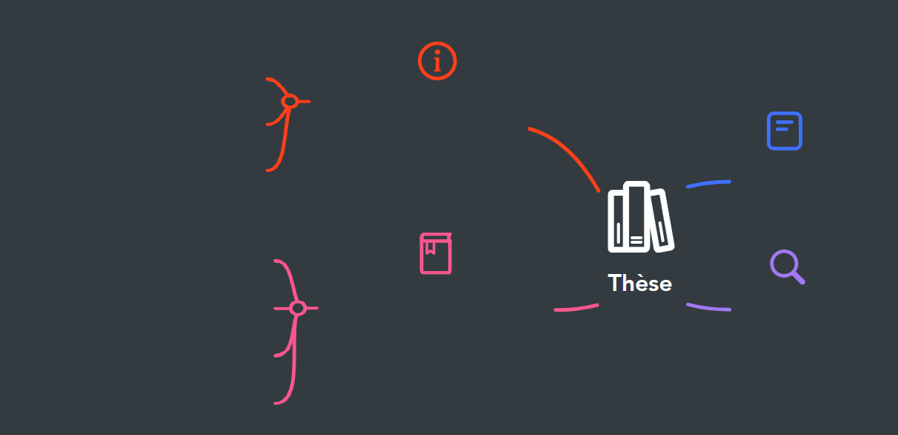

Plan de la Présentation
Voici le plan détaillé de la présentation sous forme de carte mentale.

Conclusion
Bibliographie
Présentation de la thèse
Analyse critique de la thèse
Partie formelle
Partie thématique
Partie problématique
Pertinence et intérêt
Forces et limites théoriques
Méthodologies et Résultats
Structure et forme
Retour à l'Accueil
Présentation de la Thèse
Analyse critique de la Thèse
Conclusion
Bibliographie